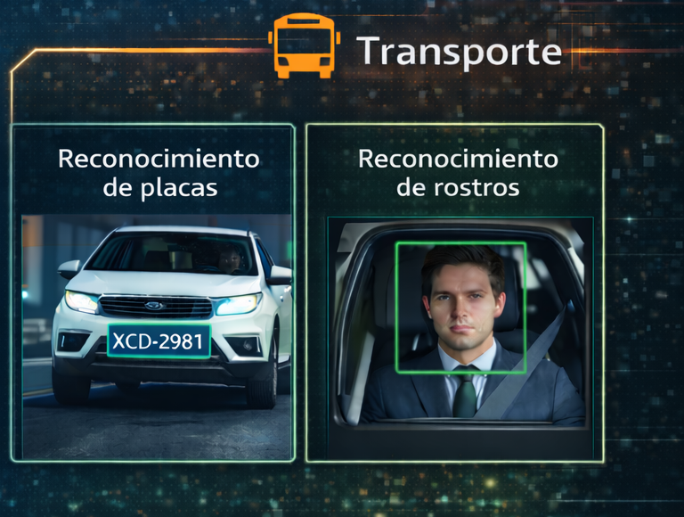
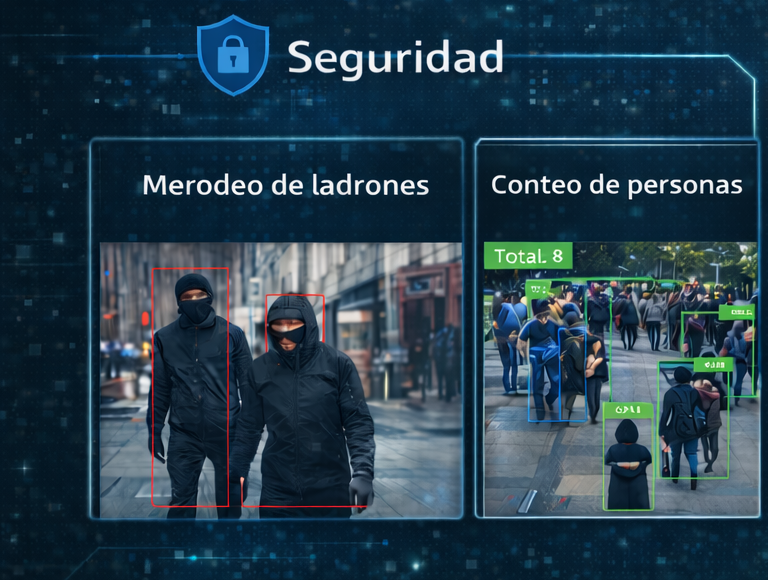

Detección de objetos en tiempo real
Detectar y buscar objetos, entrenando al sistema para reconocer en tiempo real todo tipo de objetos (personas, vehículos, etc.) y a su vez identificar potenciales delitos.
{{ site.brand }} tiene implementado una serie de soluciones o analíticas, las cuales buscan mejorar la seguridad en las principales calles de la ciudad. Con estas herramientas es posible reconocer en tiempo real diversos objetos (personas, vehículos), y a su vez analizar su comportamiento, con la finalidad de anticipar situaciones delictivas, como el MERODEO que realizan los delincuentes a una casa, local o establecimiento comercial.
Detectar y buscar objetos, entrenando al sistema para reconocer en tiempo real todo tipo de objetos (personas, vehículos, etc.) y a su vez identificar potenciales delitos.
Detectar el merodeo de presuntos delincuentes, reconociendo en tiempo real si una o varias personas acechan o merodean una casa o local con la intención ingresar a robar dicho inmueble.

